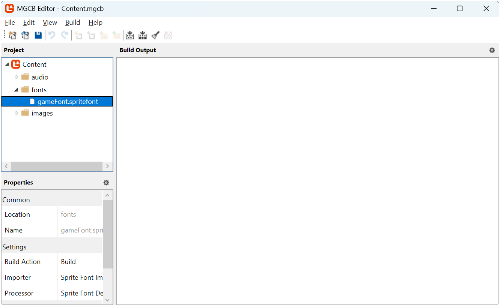

Chapter 15: Working with SpriteFonts
Learn how to create and use SpriteFonts to render text in your MonoGame project, including loading custom fonts and controlling text appearance.
In Chapter 06, you learned how to load and render textures to display sprites in your game. While images are essential for visual elements, most games also need text for things like scores, player instructions, dialogue, and UI elements. MonoGame provides the SpriteFont class to handle text rendering, which works together with the familiar SpriteBatch we've already been using for drawing textures.
In this chapter, you will:
- Learn how MonoGame handles text rendering with SpriteFonts.
- Create
SpriteFontdescription using the MGCB Editor. - Load custom fonts for use in your game.
- Render text using various parameters to control appearance.
- Implement text rendering in our game.
Let's start by understanding how text rendering works in MonoGame.
Understanding SpriteFonts
MonoGame processes fonts through the content pipeline to create a texture atlas of font characters. MonoGame uses the texture atlas approach rather than directly using system fonts for several important reasons:
- Cross-platform Compatibility: System fonts cannot be guaranteed to exist on all platforms.
- Consistency: Ensures that the text appears the same across all platforms.
- GPU Rendering: Graphics cards do not understand font formats directly; they can only render textures.
- Performance: Pre-rendering the glyphs to a texture atlas allow for faster rendering at runtime with no texture swapping.
A SpriteFont in MonoGame consists of:
- A texture atlas containing pre-rendered glyphs (characters).
- Data that tracks the position, size, and spacing of each character.
- Kerning information for adjusting spacing between specific character pairs.
The texture atlas approach means fonts are rendered as sprites, using the same SpriteBatch system you learned about for drawing textures. When you draw text, MonoGame is actually drawing small portions of the texture atlas for each character assembled together to form complete words and sentences.
Creating a SpriteFont Description
To use text in your game, you first need to create a SpriteFont Description file and process it through the Content Pipeline. The MGCB Editor makes this process straightforward. In the MGCB Editor
- Right-click the content project node where the SpriteFont Description will be created and choose Add > New Item....
- Select SpriteFont Description (.spritefont) from the options.
- Specify a name for the SpriteFont Description file and click Create.
This will create a default SpriteFont Description file that look something like this:
<?xml version="1.0" encoding="utf-8"?>
<!--
This file contains an xml description of a font, and will be read by the XNA
Framework Content Pipeline. Follow the comments to customize the appearance
of the font in your game, and to change the characters which are available to draw
with.
-->
<XnaContent xmlns:Graphics="Microsoft.Xna.Framework.Content.Pipeline.Graphics">
<Asset Type="Graphics:FontDescription">
<!--
Modify this string to change the font that will be imported.
-->
<FontName>Arial</FontName>
<!--
Size is a float value, measured in points. Modify this value to change
the size of the font.
-->
<Size>12</Size>
<!--
Spacing is a float value, measured in pixels. Modify this value to change
the amount of spacing in between characters.
-->
<Spacing>0</Spacing>
<!--
UseKerning controls the layout of the font. If this value is true, kerning information
will be used when placing characters.
-->
<UseKerning>true</UseKerning>
<!--
Style controls the style of the font. Valid entries are "Regular", "Bold", "Italic",
and "Bold, Italic", and are case sensitive.
-->
<Style>Regular</Style>
<!--
If you uncomment this line, the default character will be substituted if you draw
or measure text that contains characters which were not included in the font.
-->
<!-- <DefaultCharacter>*</DefaultCharacter> -->
<!--
CharacterRegions control what letters are available in the font. Every
character from Start to End will be built and made available for drawing. The
default range is from 32, (ASCII space), to 126, ('~'), covering the basic Latin
character set. The characters are ordered according to the Unicode standard.
See the documentation for more information.
-->
<CharacterRegions>
<CharacterRegion>
<Start> </Start>
<End>~</End>
</CharacterRegion>
</CharacterRegions>
</Asset>
</XnaContent>
When creating a SpriteFont Description for your game, you'll need to make several important decisions about font selection, size, formatting, and licensing. The following sections will guide you through customizing the SpriteFont Description using these considerations.
Customizing the SpriteFont
The SpriteFont Description file allows you to customize various aspects of how the font will be processed and appear in your game. Here are the key elements you can modify:
FontName
The <FontName> element specifies which font to use. By default, it references "Arial". When a font name is specified just by name like this, it is required that the font be installed on the system where the content is built.
Important
MonoGame recommends changing the default Arial font if you are targeting any platforms other than Windows. Arial is a legacy from XNA and is only guaranteed to be available in Windows builds. As an alternative, MonoGame recommends using Roboto.
Alternatively, for better portability across development environments, it's recommended instead to directly reference a TrueType (.ttf) or OpenType (.otf) font file. To do this
Download or locate a TTF or OTF font file.
Place it in the same directory as the .spritefont file.
Important
You place the font file in the same directory as the .spritefont file directly, not through the MGCB Editor.
Update the
<FontName>element to include the exact filename with extension.
Tip
Use fonts with permissive licenses (like SIL Open Font License) to ensure you can legally use them in your game. Always check the license of any font you use!
Size
The <Size> element controls the font size in points. While it might seem straightforward, font sizing requires consideration and can be dependent on several factors. When choosing a font size, consider:
- Resolution impact: Fonts that look good at 1080p may appear too small at 4K or too large at 720p.
- Font style: Pixel fonts look best with small sizes to preserve crispness.
- Use case: Different UI elements may require different sizes for proper hierarchy.
You may want to create multiple SpriteFont Description files for different use cases in your game such as:
- A larger font for headings and titles.
- A medium-sized font for standard UI elements.
- A smaller font for detailed information.
Tip
Creating multiple SpriteFont Description files, however, can remove some of the benefits of fonts being a texture atlas since you will now have multiple atlases for each size. You'll also now have multiple assets to manage both as asset files and references in code.
An alternative approach is to create a single SpriteFont Description with a larger than needed size font, then scale it down during runtime in the game. This approach allows you to maintain the single SpriteFont Description file and single texture atlas, however, the size of the texture atlas will now be larger.
There are tradeoffs to each approach and you should choose the one that works best for your game.
Spacing
The <Spacing> element adjusts the space between characters. The default value of 0 uses the font's built-in spacing. Positive values increase spacing, while negative values (though rarely used) can decrease it.
UseKerning
The <UseKerning> element determines whether to use kerning information from the font. Kerning adjusts the spacing between specific pairs of characters for more visually pleasing results. For most fonts, you'll want to leave this as true.
Note
While kerning typically improves text appearance, some fonts (including Arial) may not respond optimally to kerning adjustments. If you notice unusual character spacing with a particular font, try setting this value to false.
Style
The <Style> element sets the font style. Valid options are "Regular", "Bold", "Italic", or "Bold, Italic". Note that not all fonts have all styles available, and using a style that doesn't exist will fall back to Regular.
DefaultCharacter
The <DefaultCharacter> element (commented out by default) specifies what character to use as a fallback when trying to render a character that isn't included in the font. This is useful for handling special characters or international text.
CharacterRegions
The <CharacterRegions> element defines which Unicode character ranges to include in the font. The default range (32-126) covers basic Latin characters, which is sufficient for English text. Including more characters increases the font texture size but allows support for more languages or special symbols.
For most games, the default range is sufficient.
Loading a SpriteFont Description
To load a SpritFont Description, we use the ContentManager.Load method with the SpriteFont type:
// Loading a SpriteFont Description using the content pipeline
SpriteFont font = Content.Load<SpriteFont>("font");
Drawing Text with SpriteBatch
MonoGame's SpriteBatch class provides several overloads of the DrawString method to render text. The basic approach is similar to drawing textures, with a few unique parameters specific to text rendering.
The most basic DrawString overload looks like this:
_spriteBatch.DrawString(
font, // font
"Hello, MonoGame!", // text
Vector2.Zero, // position
Color.White // color
);
Let's look at the parameters:
- font: The SpriteFont to use for rendering.
- text: The text to display (as a string or
StringBuilder). - position: A Vector2 defining where to draw the text.
- color: The Color to tint the text.
Just like with texture rendering, there are more advanced overloads that give you additional control:
_spriteBatch.DrawString(
font, // font
"Hello, MonoGame!", // text
Vector2.Zero, // position
Color.White, // color
0.0f, // rotation
Vector2.Zero, // origin
Vector2.One, // scale
SpriteEffects.None, // effects
0.0f // layerDepth
);
Note
Many of these parameters (rotation, origin, scale, effects, and layerDepth) work exactly the same way as they do for texture rendering, as explained in Chapter 06. If you need a refresher on how these parameters affect rendering, refer back to that chapter.
Calculating Text Dimensions
One common task when working with text is determining how much space it will occupy on screen. This is important for:
- Centering text
- Creating UI layouts
- Checking if text fits within a designated area
- Implementing text wrapping
MonoGame's SpriteFont class provides the MeasureString method that returns the dimensions of rendered text:
// The text to measure
string message = "Hello, MonoGame!";
// Measure the size of the message to get the text dimensions.
Vector2 textSize = font.MeasureString(message);
The returned Vector2 contains:
X: The width of the text in pixelsY: The height of the text in pixels
Below is an example of centering text on the screen by drawing the text at the center of the screen and using MeasureString to calculate the center origin or the text
// The text to draw.
string message = "Hello, MonoGame!";
// Measure the size of the message to get the text dimensions.
Vector2 textSize = font.MeasureString(message);
// Set the origin to the center of the text dimensions
Vector2 origin = textSize * 0.5f;
// Position will be the center of the screen
Vector2 position = new Vector2(
GraphicsDevice.PresentationParameters.BackBufferWidth,
GraphicsDevice.PresentationParameters.BackBufferHeight
) * 0.5f;
// Draw centered text
_spriteBatch.DrawString(
font, // font
message, // text
position, // position
Color.White, // color
0.0f, // rotation
origin, // origin
1.0f, // scale
SpriteEffects.None, // effects
0.0f // layerDepth
);
Implementing Text in Our Game
Let's add some text to our game to display information to the player. We'll add a score counter that increases when the slime eats the bat.
Adding the SpriteFont Description
First, we'll need to create a SpriteFont Definition. Open the Content.mgcb content project file in the MGCB Editor and perform the following:
- Create a new directory called fonts (right-click Content > Add > New Folder).
- Right-click the new fonts directory and choose Add > New Item....
- Select SpriteFont Description (.spritefont) from the options.
- Name the file gameFont.spritefont and click Create.
|  |
|---|
| Figure 15-1: The gameFont.spritefont file created in the MGCB Editor |
Download the Font File
Next, right-click the following TTF font and choose "Save Link as..." and save it in the same directory as the gameFont.spriteFont file we just created.
Update the SpriteFont Description
Next, open the gameFont.spritefont file and make the following changes:
<?xml version="1.0" encoding="utf-8"?>
<XnaContent xmlns:Graphics="Microsoft.Xna.Framework.Content.Pipeline.Graphics">
<Asset Type="Graphics:FontDescription">
<FontName>04B_11.ttf</FontName>
<Size>32</Size>
<Spacing>0</Spacing>
<UseKerning>true</UseKerning>
<Style>Regular</Style>
<CharacterRegions>
<CharacterRegion>
<Start> </Start>
<End>~</End>
</CharacterRegion>
</CharacterRegions>
</Asset>
</XnaContent>
The key changes here are:
- The
<FontName>element was updated to04B_11.ttf, the exact filename with extension of the TTF font we just downloaded. - The
<Size>element was updated to be16.
Updating the Game
Finally, open the Game1.cs file and make the following changes:
using System;
using Microsoft.Xna.Framework;
using Microsoft.Xna.Framework.Audio;
using Microsoft.Xna.Framework.Graphics;
using Microsoft.Xna.Framework.Input;
using Microsoft.Xna.Framework.Media;
using MonoGameLibrary;
using MonoGameLibrary.Graphics;
using MonoGameLibrary.Input;
namespace DungeonSlime;
public class Game1 : Core
{
// Defines the slime animated sprite.
private AnimatedSprite _slime;
// Defines the bat animated sprite.
private AnimatedSprite _bat;
// Tracks the position of the slime.
private Vector2 _slimePosition;
// Speed multiplier when moving.
private const float MOVEMENT_SPEED = 5.0f;
// Tracks the position of the bat.
private Vector2 _batPosition;
// Tracks the velocity of the bat.
private Vector2 _batVelocity;
// The sound effect to play when the bat bounces off the edge of the screen.
private SoundEffect _bounceSoundEffect;
// The sound effect to play when the slime eats a bat.
private SoundEffect _collectSoundEffect;
// The SpriteFont Description used to draw text
private SpriteFont _font;
// Tracks the players score.
private int _score;
public Game1() : base("Dungeon Slime", 1280, 720, false)
{
}
protected override void Initialize()
{
base.Initialize();
// Determine the height of the font
float textHeight = _font.MeasureString("A").Y;
// Place the slime at a position below where the score will be displayed
_slimePosition = new Vector2(0, textHeight + 10);
// Set the initial position of the bat to be 10px to the right of the slime.
_batPosition = _slimePosition + new Vector2(_slime.Width + 10.0f, 0.0f);
// Assign the initial random velocity to the bat.
AssignRandomBatVelocity();
}
protected override void LoadContent()
{
// Create the texture atlas from the XML configuration file
TextureAtlas atlas = TextureAtlas.FromFile(Content, "images/atlas-definition.xml");
// Create the slime animated sprite from the atlas.
_slime = atlas.CreateAnimatedSprite("slime-animation");
// Create the bat animated sprite from the atlas.
_bat = atlas.CreateAnimatedSprite("bat-animation");
// Load the bounce sound effect
_bounceSoundEffect = Content.Load<SoundEffect>("audio/bounce");
// Load the collect sound effect
_collectSoundEffect = Content.Load<SoundEffect>("audio/collect");
// Load the background theme music
Song theme = Content.Load<Song>("audio/theme");
// Start playing the background music
Audio.PlaySong(theme);
// Load the font
_font = Content.Load<SpriteFont>("fonts/gameFont");
base.LoadContent();
}
protected override void Update(GameTime gameTime)
{
if (GamePad.GetState(PlayerIndex.One).Buttons.Back == ButtonState.Pressed || Keyboard.GetState().IsKeyDown(Keys.Escape))
Exit();
// Update the slime animated sprite.
_slime.Update(gameTime);
// Update the bat animated sprite.
_bat.Update(gameTime);
// Check for keyboard input and handle it.
CheckKeyboardInput();
// Check for gamepad input and handle it.
CheckGamePadInput();
// Create a bounding rectangle for the screen
Rectangle screenBounds = new Rectangle(
0,
0,
GraphicsDevice.PresentationParameters.BackBufferWidth,
GraphicsDevice.PresentationParameters.BackBufferHeight
);
// Creating a bounding circle for the slime
Circle slimeBounds = new Circle(
(int)(_slimePosition.X + (_slime.Width * 0.5f)),
(int)(_slimePosition.Y + (_slime.Height * 0.5f)),
(int)(_slime.Width * 0.5f)
);
// Use distance based checks to determine if the slime is within the
// bounds of the game screen, and if it's outside that screen edge,
// move it back inside.
if (slimeBounds.Left < screenBounds.Left)
{
_slimePosition.X = screenBounds.Left;
}
else if (slimeBounds.Right > screenBounds.Right)
{
_slimePosition.X = screenBounds.Right - _slime.Width;
}
if (slimeBounds.Top < screenBounds.Top)
{
_slimePosition.Y = screenBounds.Top;
}
else if (slimeBounds.Bottom > screenBounds.Bottom)
{
_slimePosition.Y = screenBounds.Bottom - _slime.Height;
}
// Calculate the new position of the bat based on the velocity
Vector2 newBatPosition = _batPosition + _batVelocity;
// Create a bounding circle for the bat
Circle batBounds = new Circle(
(int)(newBatPosition.X + (_bat.Width * 0.5f)),
(int)(newBatPosition.Y + (_bat.Height * 0.5f)),
(int)(_bat.Width * 0.5f)
);
Vector2 normal = Vector2.Zero;
// Use distance based checks to determine if the bat is within the
// bounds of the game screen, and if it's outside that screen edge,
// reflect it about the screen edge normal
if (batBounds.Left < screenBounds.Left)
{
normal.X = Vector2.UnitX.X;
newBatPosition.X = screenBounds.Left;
}
else if (batBounds.Right > screenBounds.Right)
{
normal.X = -Vector2.UnitX.X;
newBatPosition.X = screenBounds.Right - _bat.Width;
}
if (batBounds.Top < screenBounds.Top)
{
normal.Y = Vector2.UnitY.Y;
newBatPosition.Y = screenBounds.Top;
}
else if (batBounds.Bottom > screenBounds.Bottom)
{
normal.Y = -Vector2.UnitY.Y;
newBatPosition.Y = screenBounds.Bottom - _bat.Height;
}
// If the normal is anything but Vector2.Zero, this means the bat had
// moved outside the screen edge so we should reflect it about the
// normal.
if (normal != Vector2.Zero)
{
_batVelocity = Vector2.Reflect(_batVelocity, normal);
// Play the bounce sound effect
Audio.PlaySoundEffect(_bounceSoundEffect);
}
_batPosition = newBatPosition;
if (slimeBounds.Intersects(batBounds))
{
// Divide the width and height of the screen into equal columns and
// rows based on the width and height of the bat.
int totalColumns = GraphicsDevice.PresentationParameters.BackBufferWidth / (int)_bat.Width;
int totalRows = GraphicsDevice.PresentationParameters.BackBufferHeight / (int)_bat.Height;
// Choose a random row and column based on the total number of each
int column = Random.Shared.Next(0, totalColumns);
int row = Random.Shared.Next(0, totalRows);
// Change the bat position by setting the x and y values equal to
// the column and row multiplied by the width and height.
_batPosition = new Vector2(column * _bat.Width, row * _bat.Height);
// Assign a new random velocity to the bat
AssignRandomBatVelocity();
// Play the collect sound effect
Audio.PlaySoundEffect(_collectSoundEffect);
// Increase the player's score.
_score += 100;
}
base.Update(gameTime);
}
private void AssignRandomBatVelocity()
{
// Generate a random angle
float angle = (float)(Random.Shared.NextDouble() * Math.PI * 2);
// Convert angle to a direction vector
float x = (float)Math.Cos(angle);
float y = (float)Math.Sin(angle);
Vector2 direction = new Vector2(x, y);
// Multiply the direction vector by the movement speed
_batVelocity = direction * MOVEMENT_SPEED;
}
private void CheckKeyboardInput()
{
// If the space key is held down, the movement speed increases by 1.5
float speed = MOVEMENT_SPEED;
if (Input.Keyboard.IsKeyDown(Keys.Space))
{
speed *= 1.5f;
}
// If the W or Up keys are down, move the slime up on the screen.
if (Input.Keyboard.IsKeyDown(Keys.W) || Input.Keyboard.IsKeyDown(Keys.Up))
{
_slimePosition.Y -= speed;
}
// if the S or Down keys are down, move the slime down on the screen.
if (Input.Keyboard.IsKeyDown(Keys.S) || Input.Keyboard.IsKeyDown(Keys.Down))
{
_slimePosition.Y += speed;
}
// If the A or Left keys are down, move the slime left on the screen.
if (Input.Keyboard.IsKeyDown(Keys.A) || Input.Keyboard.IsKeyDown(Keys.Left))
{
_slimePosition.X -= speed;
}
// If the D or Right keys are down, move the slime right on the screen.
if (Input.Keyboard.IsKeyDown(Keys.D) || Input.Keyboard.IsKeyDown(Keys.Right))
{
_slimePosition.X += speed;
}
// If the M key is pressed, toggle mute state for audio.
if (Input.Keyboard.WasKeyJustPressed(Keys.M))
{
Audio.ToggleMute();
}
// If the + button is pressed, increase the volume.
if (Input.Keyboard.WasKeyJustPressed(Keys.OemPlus))
{
Audio.IncreaseVolume(0.1f);
}
// If the - button was pressed, decrease the volume.
if (Input.Keyboard.WasKeyJustPressed(Keys.OemMinus))
{
Audio.DecreaseVolume(0.1f);
}
}
private void CheckGamePadInput()
{
GamePadInfo gamePadOne = Input.GamePads[(int)PlayerIndex.One];
// If the A button is held down, the movement speed increases by 1.5
// and the gamepad vibrates as feedback to the player.
float speed = MOVEMENT_SPEED;
if (gamePadOne.IsButtonDown(Buttons.A))
{
speed *= 1.5f;
GamePad.SetVibration(PlayerIndex.One, 1.0f, 1.0f);
}
else
{
GamePad.SetVibration(PlayerIndex.One, 0.0f, 0.0f);
}
// Check thumbstick first since it has priority over which gamepad input
// is movement. It has priority since the thumbstick values provide a
// more granular analog value that can be used for movement.
if (gamePadOne.LeftThumbStick != Vector2.Zero)
{
_slimePosition.X += gamePadOne.LeftThumbStick.X * speed;
_slimePosition.Y -= gamePadOne.LeftThumbStick.Y * speed;
}
else
{
// If DPadUp is down, move the slime up on the screen.
if (gamePadOne.IsButtonDown(Buttons.DPadUp))
{
_slimePosition.Y -= speed;
}
// If DPadDown is down, move the slime down on the screen.
if (gamePadOne.IsButtonDown(Buttons.DPadDown))
{
_slimePosition.Y += speed;
}
// If DPapLeft is down, move the slime left on the screen.
if (gamePadOne.IsButtonDown(Buttons.DPadLeft))
{
_slimePosition.X -= speed;
}
// If DPadRight is down, move the slime right on the screen.
if (gamePadOne.IsButtonDown(Buttons.DPadRight))
{
_slimePosition.X += speed;
}
}
}
protected override void Draw(GameTime gameTime)
{
// Clear the back buffer.
GraphicsDevice.Clear(Color.CornflowerBlue);
// Begin the sprite batch to prepare for rendering.
SpriteBatch.Begin(samplerState: SamplerState.PointClamp);
// Draw the slime sprite.
_slime.Draw(SpriteBatch, _slimePosition);
// Draw the bat sprite.
_bat.Draw(SpriteBatch, _batPosition);
// Draw the score
SpriteBatch.DrawString(_font, $"Score: {_score}", Vector2.Zero, Color.White);
// Always end the sprite batch when finished.
SpriteBatch.End();
base.Draw(gameTime);
}
}
The key changes made are:
- The
_fontfield was added to store the SpriteFont Description when loaded. - The
_scorefield was added to track the player's score. - In Initialize
- The height of the rendered font is measured
- The initial slime position is placed 10px below where the score text will be rendered.
- The initial bat position is updated to be 10px below where the score text will be rendered.
- In LoadContent, the font is loaded using the content manager.
- In Update, the player's score is increased by
100each time the slime eats the bat. - In Draw, the score is drawn to the top-left of the screen using the sprite batch.
| Figure 15-2: The game with score displayed in the top-left corner |
Conclusion
Let's review what you accomplished in this chapter:
- Learned how to create SpriteFont definitions with the MGCB Editor.
- Learned how to reference font files for better cross-platform compatibility.
- Learned how to load SpriteFonts through the content pipeline.
- Learned how to draw text with various parameters to control appearance.
- Learned how to measure text dimensions.
- Implementing a score display and boost indicator in our game.
In the next chapter we'll discuss MonoGame's service container and how we can use it to start breaking our monolithic game file into modules for better maintainability.
Test Your Knowledge
What are the key components of a SpriteFont in MonoGame?
A SpriteFont in MonoGame consists of:
- A texture atlas containing pre-rendered glyphs (characters)
- Data that tracks the position, size, and spacing of each character
- Kerning information for adjusting spacing between specific character pairs
Why is it recommended to include the font file in your content project rather than referencing system fonts?
Including the font file (TTF/OTF) directly in your content project and referencing it with the file extension ensures portability across different development environments. This approach doesn't depend on fonts being installed on the system where the content is built.
What method would you use to determine how much space a text string will occupy when rendered, and what does it return?
The SpriteFont.MeasureString method is used to determine text dimensions. It returns a Vector2 where the X component represents the width and the Y component represents the height of the rendered text in pixels.